|
蜂鸟M离线方案开发指导手册
v1.0.4
|
• 产品的软件烧录包下载成功后，解压文件，可以看到如下方文件目录
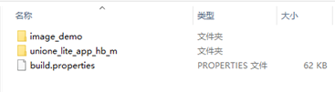
• 如想直接使用，体验语音功能，请打开“image_demo/Hummingbird-M-Production-Tool”文件夹，双击“UniOneDownloadTool”，运行烧录工具
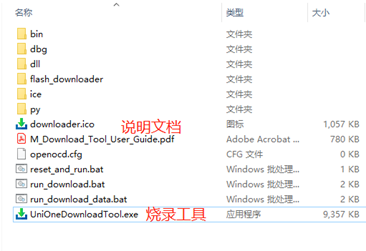
• 烧录工具配置界面如下图所示：
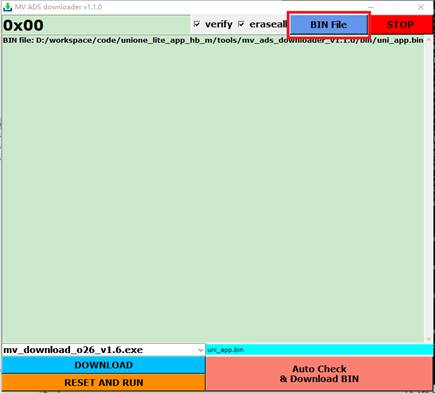
开始烧录之前，需要准备：
- Micro USB连接线，用于供电
- 烧录器，用于烧录
- 蜂鸟M开发板
- 固件包
烧录器
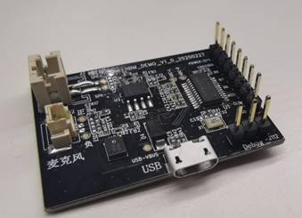
蜂鸟开发板示例图
开始烧录之前，需要准备：
打开烧录包，Hummingbird-M-Production-Tool内，可看到以下目录结构：
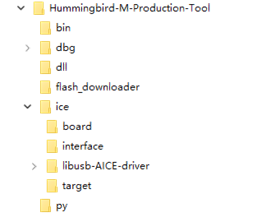
和用户相关的目录有以下几个：
\bin ： 用户存放bin/mva 文件的目录
\flash_downloader : flash downloader 存放目录，需要提取相应芯片SDK 中提供的downloader.exe
\ice\libusb-AICE-driver ： 仿真器驱动
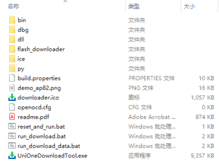
根目录有以下用户相关的文件：
UniOneDownloadTool_x64.exe ：烧录工具启动exe
run_download.bat ： 批量执行脚本例程
插入烧录器，如在设备管理器看到未知设备，则需要安装驱动。
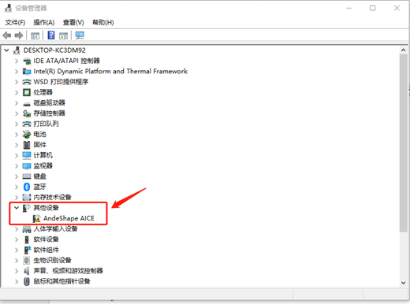
1、 准备固件：发布的固件包，如Hummingbird-M-Production-Tool
2、 打开Hummingbird-M-Production-Tool\ice\libusb-AICE-driver，双击Install_driver.exe，点击同意安装
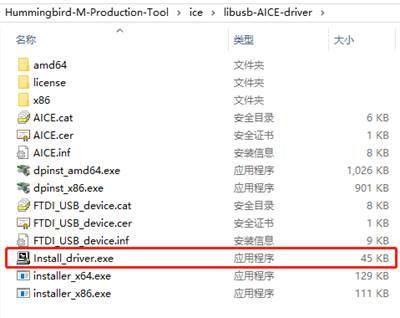
3、 处于设备管理器页面，右击AICE（未知设备），更新驱动程序
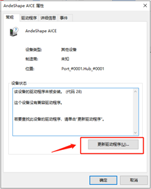
4、 选择浏览计算机查找驱动
驱动路径： Hummingbird-M-Production-Tool\ice\libusb-AICE-driver
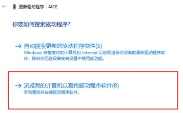
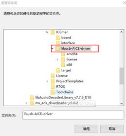
5、 点击确定后，回到更新驱动程序页面，点击下一步，等待驱动安装成功。
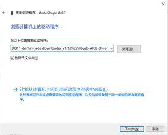
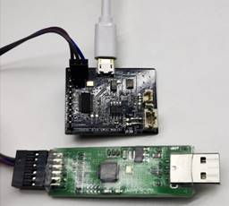
在开发板上找到“Debug”接口，该接口有三根信号线，按开发板上丝印分别为GND、RX、TX.
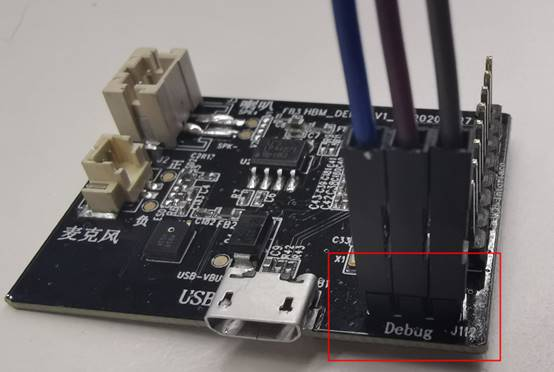
三个接口分别对应烧录器上GND（3号脚）、TMS（4号脚）、TCK(6号脚)，接线示意图如下所示：
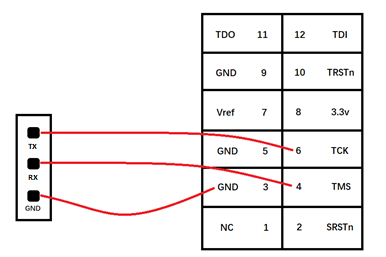
使用USB连接线给开发板上电，即接入电源。可直接接电脑，或者任意5V电源适配器（如手机充电器）。
点击烧录工具界面“BIN File”按钮，选择待烧录bin文件：
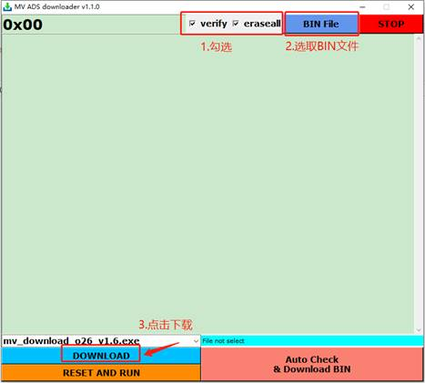
默认选择路径为“image_demo/ Hummingbird-M-Production-Tool /bin”，也可通过文件浏览器选择其他路径：
注：目前发布包中同时包含uni_app_debug.bin和uni_app_release.bin两个版本，其中release为正式版本，debug为带log调试版本，与release版本相比响应速度较慢，仅用于调试使用。
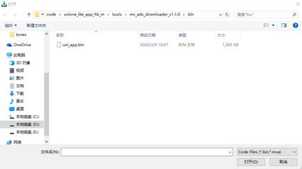
选择烧录bin文件后，点击烧录工具界面“DOWNLOAD”按钮，开始烧录：
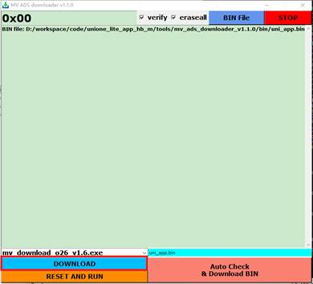
烧录成功则烧录工具界面打印烧录进度，直到打印“Verify success”信息：
如未显示则表示未识别到COM口，请检查：
① 串口线是否接好
② 串口线是否反接
③ 是否安装UART对应驱动。
而烧录失败界面将输出错误信息，如下图：
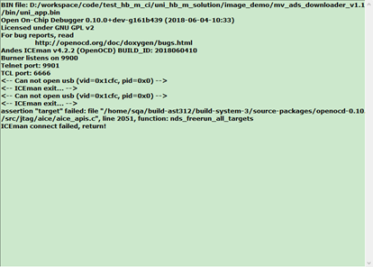
如烧录失败，请检查：
① 开发板是否供电
② 开发板SW Debug接口是否接好
③ SW线是否按照要求反接，确认后请回到步骤1重新短接上电，重新进入烧录模式
④ 其他错误，请按照烧录界面提示信息排查问题
具体详见《蜂鸟M芯片方案USB升级工具使用指南》，文档位于固件包目录下unione_lite_app_hb_m\tools\Hummingbird-M-Update-Tool\USB_Update_Tool_User_Guide.pdf文件。